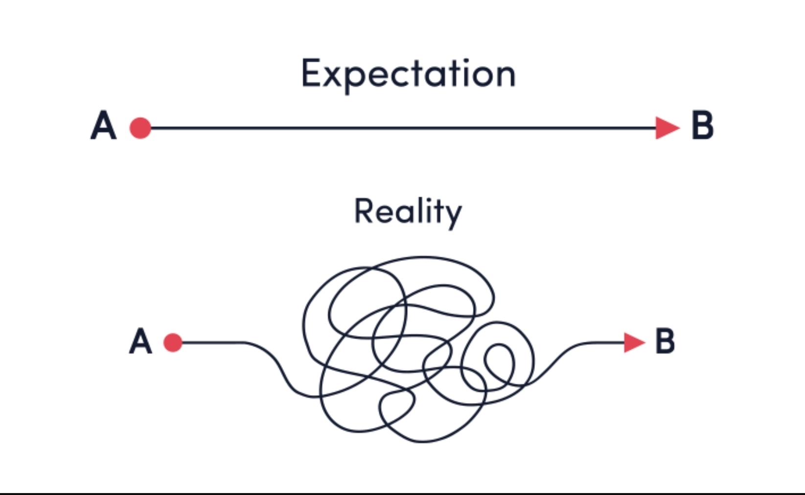

IB Conseil
Accompagnement & conseil professionnel
Accompagnement & conseil professionnel
Interventions auprès des écoles de commerce et universités pour transmettre des compétences commerciales concrètes et directement applicables.
Nous transmettons aux étudiants les fondamentaux des techniques de vente adaptées aux réalités actuelles du marché.
L’objectif est de développer leur posture commerciale, leur capacité d’écoute et leur efficacité dans la relation client.
Les mises en situation professionnelles placent les étudiants dans des contextes proches de la réalité du terrain.
Jeux de rôles, cas pratiques et simulations permettent de mettre en application les notions abordées et de gagner en confiance.

Nous apportons une vision concrète du fonctionnement des entreprises, des marchés et des points de vente.
Cette approche terrain permet aux étudiants de mieux comprendre les enjeux commerciaux et de faciliter leur insertion professionnelle.